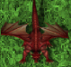
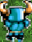

import math
import random
import time
def distance(x1, y1, x2, y2):
return math.sqrt((x1-x2)**2+(y1-y2)**2)
BTC = Pattern().similar(0.55)
DRAGON = Pattern().similar(0.45)
STATIC = Pattern().similar(0.60)
areaRadius = 200
fewTaps = [1,2]
start = find(Pattern().similar(0.50))
LastPos = (start.getX(), start.getY())
DELAY_FACTOR = 450
SCREEN_RES_X = 1080
SCREEN_RES_Y = 2220
def GetMouseCoordinates():
getmouseLoc = Env.getMouseLocation()
x = getmouseLoc.getX()
y = getmouseLoc.getY()
return x, y
def GetDelay(x, y):
hipotenuse = (math.sqrt(math.pow(x - (SCREEN_RES_X / 2) , 2) + math.pow(y - (SCREEN_RES_Y / 2) , 2)))
ReturnDelay = hipotenuse / DELAY_FACTOR
if ( ReturnDelay < 1 ):
return 0
else:
return(ReturnDelay)
def maxArea(points, curX, curY):
maxAreaObjects = list()
centerObject = None
minDist = 12345
for c in points:
curAreaObjects = []
for p in points:
if distance(c[0],c[1], p[0],p[1])<= areaRadius:
curAreaObjects.append(p)
if len(maxAreaObjects)==len(curAreaObjects):
if distance(curX,curY,c[0],c[1])<minDist:
maxAreaObjects = curAreaObjects
centerObject = c
minDist = distance(curX,curY,c[0],c[1])
if len(maxAreaObjects)<len(curAreaObjects):
maxAreaObjects = curAreaObjects
centerObject = c
minDist = distance(curX,curY,c[0],c[1])
print('OBJECTS:',str(len(maxAreaObjects)))
print(maxAreaObjects)
print(minDist)
return maxAreaObjects
def visitArea(objects):
objects.sort(key=lambda x: distance(x[0],x[1],LastPos[0],LastPos[1]))
o = objects[-1]
if len(objects)>=3:
walkAround(o[0],o[1])
else:
visitPoint(o[0],o[1])
def walkAround(x,y):
''' Walk around area like on romb edges '''
dx = [random.randint(2,4), 0, -random.randint(2,4), 0]
dy = [0, random.randint(2,4), 0, -random.randint(2,4)]
for i in range(len(dx)):
nx,ny = x+dx[i], y+dy[i]
click(Location(nx,ny))
time.sleep(random.randint(200,400)/1000)
def visitPoint(x,y):
a = -4
b = 4
for i in range(random.choice(fewTaps)):
xp = x+random.randint(a,b)
yp = y+random.randint(a,b)
click(Location(xp,yp))
LastPos = (xp, yp)
a+=2
b-=2
wait(GetDelay(x,y))
LastPos = start.getX(),start.getY()
def checkObjects():
return exists(BTC) or exists(DRAGON)
def walkSomewhere():
upClosed = False
downClosed = False
rightClosed = False
leftClosed = False
while True:
if exists(Pattern().similar(0.93)): rightClosed = True
if exists(Pattern( ).similar(0.40)): upClosed
if upClosed and leftClosed and rightClosed and leftClosed:
popup('Oooops! We are in trouble, boss!')
dx = 20
dy = 20
if upClosed: dy = -20
if rightClosed: dx = -20
visitPoint(LastPos[0]+dx, LastPos[1]+dy)
if checkObjects(): break
while exists(STATIC):
points = list()
try:
for p in findAll(BTC):
points.append((p.getX(),p.getY()))
except:
pass
try:
for p in findAll(DRAGON):
points.append((p.getX(),p.getY()))
except:
pass
if len(points)!=0:
MA = maxArea(points, LastPos[0], LastPos[1])
visitArea(MA)
else:
walkSomewhere()
).similar(0.40)): upClosed
if upClosed and leftClosed and rightClosed and leftClosed:
popup('Oooops! We are in trouble, boss!')
dx = 20
dy = 20
if upClosed: dy = -20
if rightClosed: dx = -20
visitPoint(LastPos[0]+dx, LastPos[1]+dy)
if checkObjects(): break
while exists(STATIC):
points = list()
try:
for p in findAll(BTC):
points.append((p.getX(),p.getY()))
except:
pass
try:
for p in findAll(DRAGON):
points.append((p.getX(),p.getY()))
except:
pass
if len(points)!=0:
MA = maxArea(points, LastPos[0], LastPos[1])
visitArea(MA)
else:
walkSomewhere()